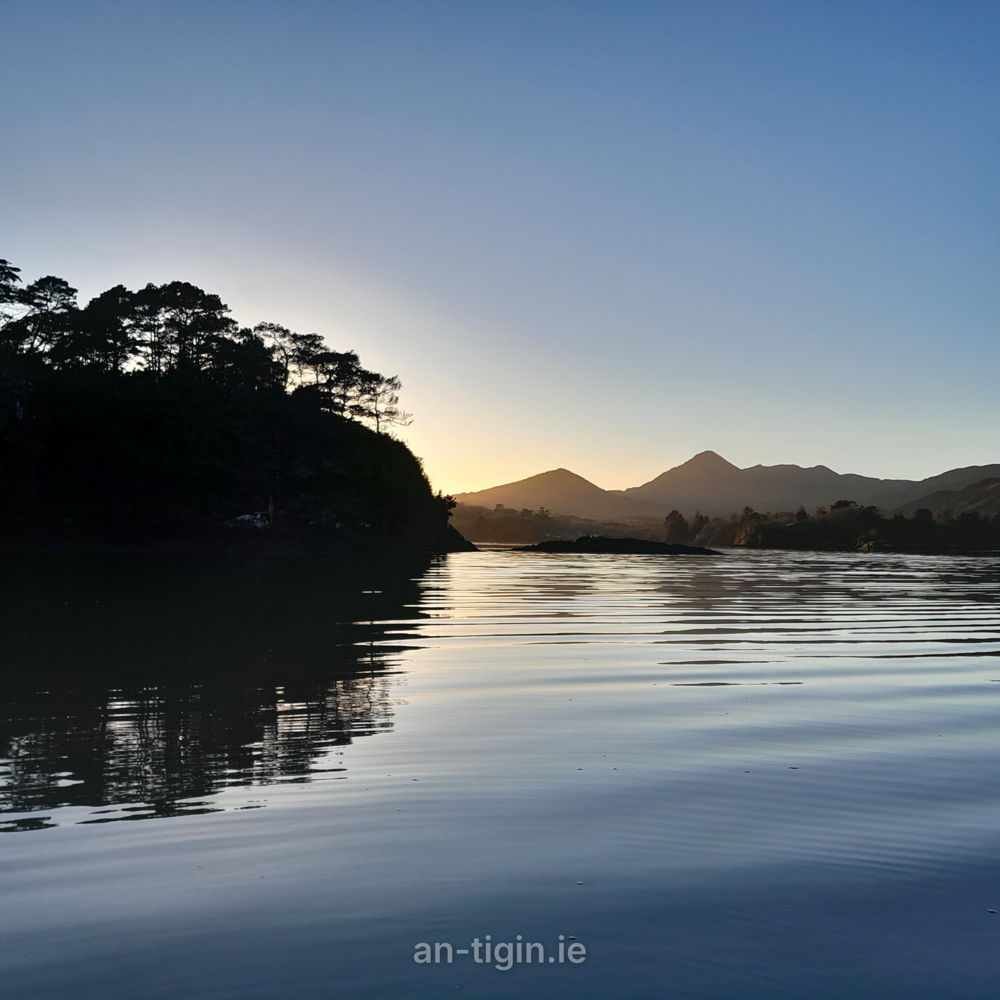
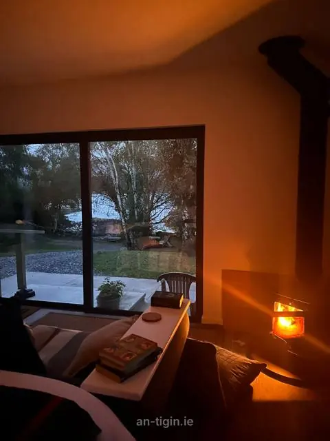
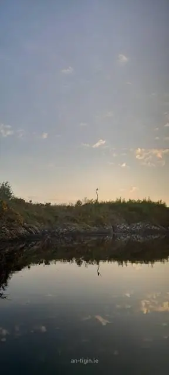
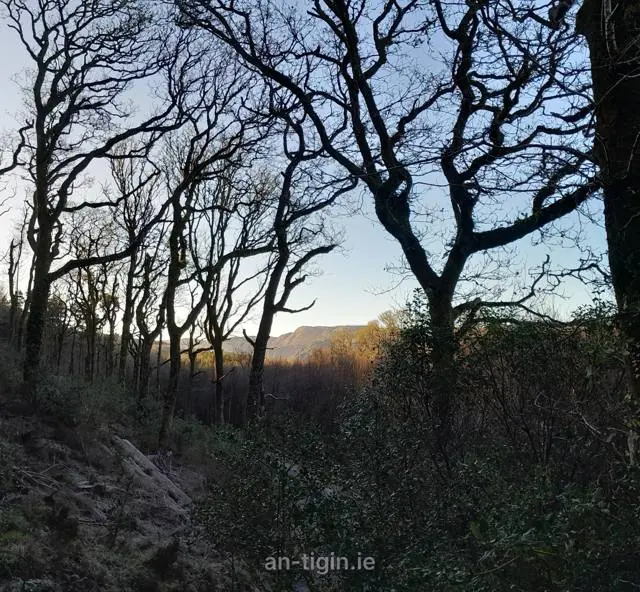
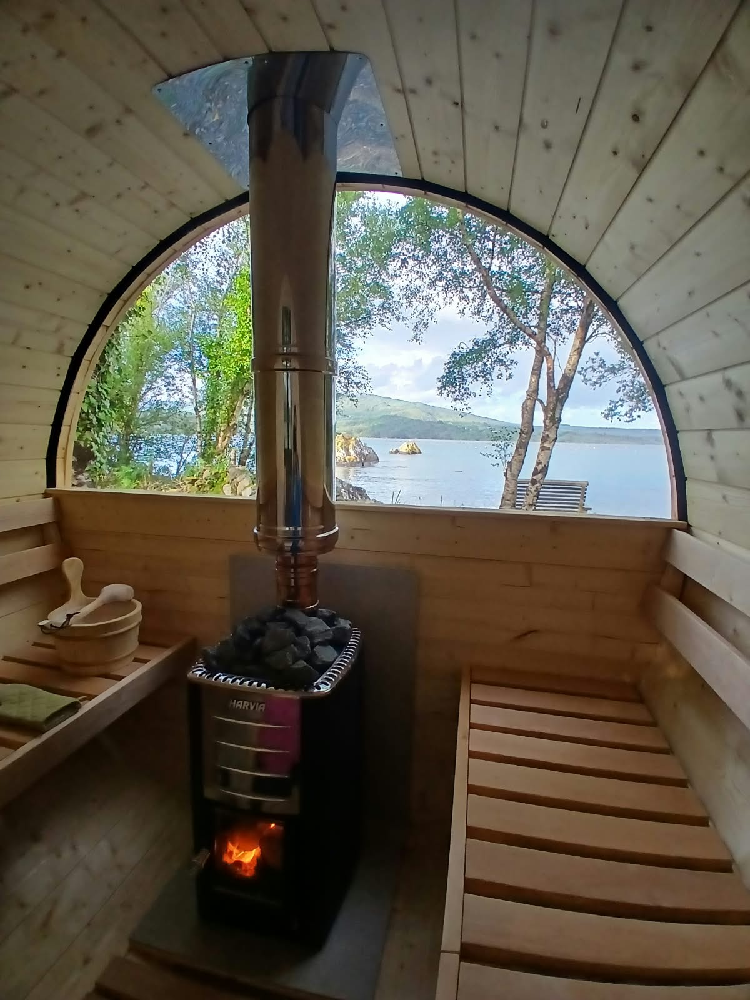

Wild Atlantic Way
Unplug & unwind between the mountains and the sea.
A warm and cosy off-grid cabin, just 3km from the picturesque village of Glengarriff.
An idyllic escape from the hustle and bustle of everyday life.
Swim in the calm waters, explore the stunning landscapes, or simply curl up with a good book by the fire.
An Tigín provides the perfect setting to unplug and recharge your mind and body.
About the cabinA little cabin, a big landscape.

The sauna
A wood-fired barrel sauna right by the water.

The view
Mountains and the sea from your doorstep.

Evenings
Fire-lit nights under dark West Cork skies.

The bedroom
One king-size bed, warm and cosy.

The bay
Calm water for a swim, or a guided kayak trip.

Wildlife
Sea eagles, herons and dolphins in the bay.

The woods
Glengarriff Nature Reserve, minutes away.

Eco-friendly glamping, like no other.
There's no mains electricity or Wi-Fi at An Tigín. Instead, you'll find everything you need to slow right down.
Off-grid, not roughing it
4G/5G coverage, LED lighting, a power bank and a place to charge your devices.
Sauna & sea
Warm up in the sauna, then cool off with a calming swim in the bay.
Pure well water
Drawn from our own well, bored 360 feet into the rock.
Simple comforts
Hot water for showering, a single-ring gas cooker and a composting toilet.
Loved by our guests.
Airbnb Guest Favourite, with 3 years of hosting.
Tranquil, but never too far.
Glengarriff has shops, restaurants, hotels, a pizzeria, a pharmacy and some very inviting pubs, with bus links to Cork City and Killarney. Bantry is 21km away and Cork Airport 85km.
We'd recommend having your own transport so you can explore at your own pace.